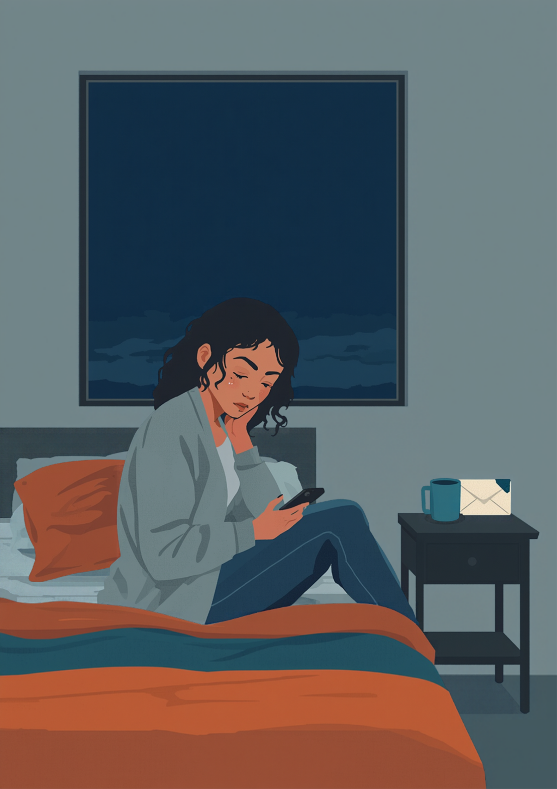
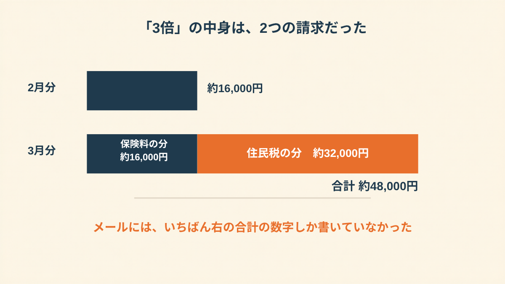
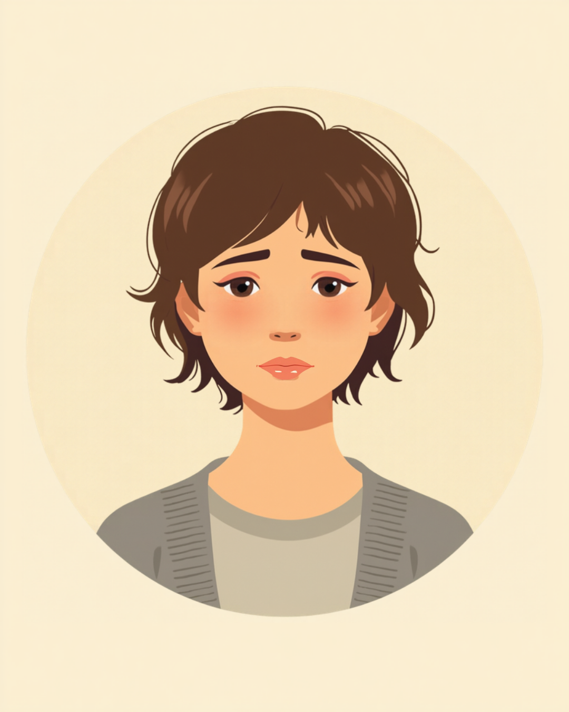
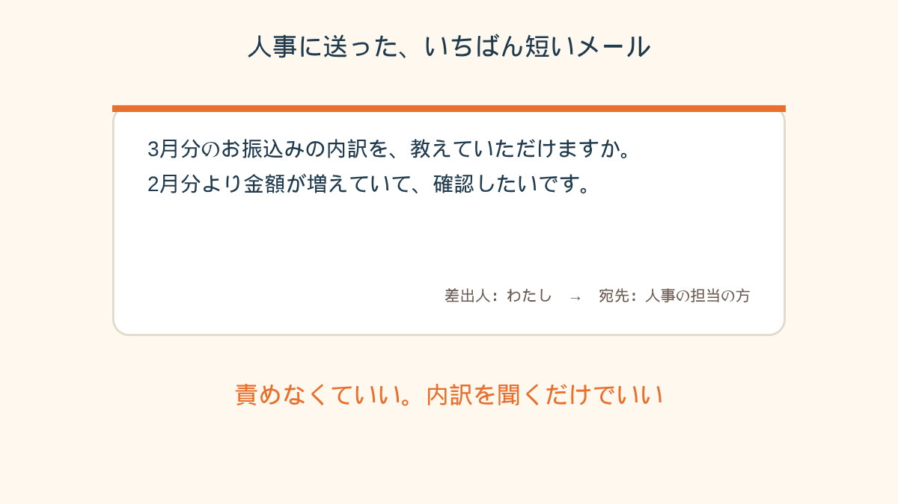

先月は16,000円だった。見間違いかと思って、画面を3回見た。

水曜の夜、「振込のお願い」というメールが来た
休職して2ヶ月目でした。
営業事務で、28歳。
朝はなんとか起きるけど、昼すぎには電池が切れる、そういう毎日。
人事から来たメールの件名は、「【休職中の社会保険料について】お振込みのお願い」。
本文には、振込先の口座と、「2月分 約16,000円」という数字。
それだけ。
最初に思ったのは、給料が出ていないのに、お金を払うのかってことでした。
知らなかったんです。休むと、保険料は自分で会社に振り込む、ということを。
診断書を出したときも、休職の説明を受けたときも、そこは多分ちらっと言われてたはずなのに、あの頃の私は半分くらいしか頭に入ってなかった。
16,000円。
痛いけど、払えない額じゃない。
その週のうちに、ネットバンキングから振り込みました。
「そういうものなんだ」って、自分に言い聞かせながら。
翌月、数字が3倍になっていた
そして3月。
同じ人事の人から、同じ件名のメールが来ました。
「3月分 約48,000円」
見間違いだと思って、スマホの画面を拡大して、もう一回見て。
パソコンで開き直して、また見て。
3回見ても、48,000円でした。
先月の、ちょうど3倍。
その時の通帳の残高は、いくらだったか。
たぶん、あまり余裕のない数字でした。傷病手当金は、書類を出したばかりでまだ入ってないころで。
「金額が上がった理由が、メールのどこにも書いてなかったんです。『お振込みください』と口座番号だけ。こっちは給料ゼロで、手当金もまだ入ってないのに。聞けばいいのは分かってたんですけど、人事に『なんで増えたんですか』って打つのが、すごくケンカを売るみたいで。結局、2日間なにもできませんでした」
そうなんですよね。
聞けばいい。それは分かってる。
でも休職中の頭は、「聞く」っていうたった一つの動作に、驚くほどエネルギーが要る。

夜中に「違法」で検索して、何も決められなかった
その夜、布団の中で検索しました。
「休職中 社会保険料 3倍」
「休職中 保険料 全額 自分で」
出てきたページには、「会社と折半が原則」とか「会社負担分まで請求されたら問題」とか書いてありました。
読んでるうちに、「もしかして、うちの会社、全額取ろうとしてる？」ってなった。
そこから「違法」「労基」「相談」って単語ばかり打って、気づいたら午前2時。
でも、頭のどこかで分かってました。
今の私に、労基署に電話する元気は、ない。
会社と争うのも、書類を集めるのも、無理。
疑う気持ちだけが大きくなって、何ひとつ、決められなかった。

人事に聞いたら、内訳があった
結局、3日目の朝にメールを書きました。
何度も書き直して、いちばん短くした。
「3月分のお振込みの内訳を、教えていただけますか。2月分より金額が増えていて、確認したいです」
返信は、その日の午後に来ました。
「すみません、書いていなくて。社会保険料の分が約16,000円で、あとは住民税の分が入っています。住民税は休職前は給料から引かれていたので、今は個人で納める形になります」
……そういうこと、だったのか。
金額が3倍になったのは、保険料が増えたんじゃなくて、別の請求が一緒になっていたから。
力が抜けました。
疑ってごめんなさい、って、人事の人にじゃなくて、2時前まで検索してた自分に思った。
「うちは『全額実費』って言われたんです。折半じゃなかった。でも、うつがひどかった時期で、その場で『はい』って言って、払っちゃいました。あとから年金事務所に電話して、聞いてみたら、会社に確認が必要な話だって。判断力がないときの『はい』って、あとで取り消せないのが、いちばんつらいです」
もちろん、全部が全部、私みたいにうまく解決するわけじゃないと思います。
会社によって、お金の集め方も、説明のしかたも違う。
「全額」と言われたまま、よく分からずに払ってしまう人もいる。
私の場合は、数字の内訳を聞けただけで、ずいぶん楽になりました。
払えるかどうかは、そのあと別の話だった。
それでもその夜は、久しぶりに、朝まで眠れました。

この記事に、聞いてみたいことはありますか？
「自分の場合はどうなんだろう」と思ったことを、気軽に書いてみてください。いただいた質問は個別にお返事したうえで、匿名で記事にすることがあります。